介绍¶
课程目标:¶
- 基本的操作系统名词和概念
- Linux 内核概述
基本的操作系统名词和概念¶
用户与内核的比较¶
内核（kernel）和用户（user）是操作系统中常用的两个术语。它们的定义很明确：内核是操作系统的一部分，以较高的权限级别运行；而用户（空间）通常指的是那些以较低权限级别运行的应用程序。
然而，这些术语与其他词汇结合时含义经常会发生变化，并且在某些情况下可能具有非常特定的含义。
用户模式（User Mode）和内核模式（Kernel Mode）是指处理器执行模式的专业术语。在内核模式下，代码能够完全 [1] 控制 CPU，拥有最高权限；而用户模式下的代码则受到限制。例如，只有在内核模式下，才能启用或禁用 CPU 的本地中断；如果在用户模式下尝试这样的操作，则会触发异常，此时内核会介入处理。
| [1] | 有些处理器可能具有比内核模式更高的特权，例如，虚拟机监视器（hypervisor）模式，在该模式下处理器仅允许在虚拟机监视器（虚拟机监控程序）中运行的代码访问。 |
用户空间（User Space）和内核空间（Kernel Space）专指与内存保护相关的概念，或者是与内核及用户应用程序相关联的虚拟地址空间。
你可以将其简单理解为：内核空间是专门为操作系统内核保留的内存区域，而用户空间则是分配给各个用户进程的内存区域。内核空间具有访问保护，用户应用程序无法直接访问这部分空间；相对地，用户空间则可以被运行在内核模式下的代码直接访问。
典型的操作系统架构¶
在典型的操作系统架构中，操作系统内核负责安全且公平地管理多个应用程序对硬件资源的访问和共享。
操作系统内核提供了一组 API 供应用程序调用，通常它们称为“系统调用”。这些 API 与普通的库 API 有所不同，它们标志着执行模式从用户态切换到内核态的界限。
为了确保应用程序的兼容性，系统调用的变动非常少。Linux 特别严格地执行这一原则（与那些可能会根据需求进行更改的内核 API 相比）。
内核代码可以逻辑上划分为核心内核代码和设备驱动程序代码。设备驱动程序负责操作特定的设备，而核心内核代码则是通用的。此外，核心内核代码还可以细分为多个逻辑子系统，如文件访问、网络和进程管理等。
单体内核¶
单体内核（也称为宏内核或巨内核）是一种内核设计，其中各个内核子系统之间的访问没有特别的保护措施，允许各个子系统互相直接调用公共函数。

尽管如此，大部分单体内核在子系统间都实现了逻辑上的分隔，尤其是核心内核与设备驱动程序之间，它们通常需要通过较为严格的 API 来互相访问服务（这些 API 并非总是固定不变的）。显然，这种做法依赖于内核的具体实现和架构设计。
微内核¶
微内核是一种内核设计，其中大部分功能以受保护的方式相互作用，并通常作为用户空间中的服务来运行。因为内核的关键功能现在在用户模式下运行，导致在内核模式下运行的代码量大幅减少，微内核由此得名。
在微内核架构中，内核只包含最基本代码（允许不同运行进程间进行消息传递）。在实际应用中，这意味着内核仅实现调度程序和进程间通信（IPC）机制，以及基础内存管理，从而在应用程序和服务之间建立了保护层。
这种架构的优点之一是服务被隔离，因此某一个服务中的错误不会影响其他服务。
因此，如果一个服务崩溃，我们可以只重启它而不影响整个系统。然而，实践中很难实现这一点，因为重新启动一个服务可能会影响依赖该服务的所有应用程序（例如，如果文件服务器崩溃，所有打开文件描述符的应用程序在访问文件时会遇到错误）。
这种架构为内核带来了模块化的设计，并在各个服务之间实现了内存隔离，但这样做的代价是牺牲了一定的性能。在传统的单体内核中，两个服务之间可以通过简单的函数调用来交互，而在微内核架构中，这种交互需要通过进程间通信（IPC）和任务调度来完成，从而引入了额外的性能开销 [2]。
| [2] | https://lwn.net/Articles/220255/ |
微内核与单体内核的比较¶
微内核的拥护者常常强调，由于其固有的模块化设计，微内核在结构上更为优越。尽管如此，单体内核同样可以实现模块化。事实上，现代的单体内核通过采纳以下策略，已经达到了模块化的效果：
- 组件可以在编译时启用或禁用
- 支持可加载内核模块（在运行时）
- 将内核组织成逻辑上独立的子系统
- 接口严格，但其性能开销低：宏、内联函数以及函数指针
有些操作系统（曾）自称为混合内核，位于单体内核和微内核之间的某个点（例如 Windows 和 Mac OS X）。然而，鉴于这些操作系统中的传统单体服务均在内核模式下执行，实际上并无充分理由将其归类为除单体内核以外的其他类型。
许多操作系统和内核专家认为这种标签没有实际意义，仅仅是市场营销的策略。Linus Torvalds 对此评论道：
“至于所谓的‘混合内核’，那完全是营销的产物。‘噢，微内核获得了很多好评，我们怎样才能为我们的内核也赢得一些好评呢？我有个主意，就让我们给它起一个很酷的名字，暗示它拥有所有其他系统的优势。’”
地址空间¶
“地址空间”这个术语在不同的上下文中具有不同的含义。
“物理地址空间”指的是内存总线上可见的 RAM 和设备内存。例如，在 32 位的 Intel 架构中，通常会将 RAM 映射到较低的物理地址空间，而显卡内存则映射到较高的物理地址空间。
“虚拟地址空间”（有时简称为地址空间）是指启用虚拟内存模块时，CPU 所感知的内存布局（有时也称为保护模式或开启分页）。内核负责建立映射，创建虚拟地址空间，其中某些区域会映射到特定的物理内存区域。
与虚拟地址空间相关的还有两个常用术语：“进程（地址）空间”和“内核（地址）空间”。
“进程空间”是与单个进程相关联的虚拟地址空间的一部分，它构成了进程的“内存视图”，从零开始并连续延伸。进程地址空间的结束位置取决于具体实现和系统架构。
“内核空间”是运行在内核模式下代码的内存视图。
用户和内核共享虚拟地址空间¶
一种典型的用户和内核空间的实现方式是将虚拟地址空间在用户进程和内核之间共享。
在这种情况下，内核空间位于地址空间的顶端，用户空间则位于底部。为了防止用户进程访问内核空间，内核会建立防止用户模式下的进程访问内核空间的映射。
执行上下文¶
有效处理中断是内核最重要的职责之一。这一点非常重要，以至于它有一个专门的执行上下文与之相关联。
当内核因中断而被激活时，它将在中断上下文中执行操作。这不仅包括中断处理程序，还包括其他一些特殊的软件结构，它们也会在中断模式下运行。
在中断上下文中执行的代码始终处于内核模式，因此内核开发者必须遵守某些限制，比如不能调用阻塞函数或访问用户空间。
与中断上下文相对的是进程上下文。在进程上下文中执行的代码可以在用户模式下运行（执行应用程序代码），也可以在内核模式下运行（执行系统调用）。
多任务处理¶
多任务处理是操作系统同时执行多个程序的能力。它通过快速在运行进程之间切换来实现。
合作式多任务处理要求各个程序相互协作，以便实现多任务处理。一个程序在执行完毕后，会将 CPU 控制权交还给操作系统，随后操作系统便会调度另一个程序进行运行。
而在抢占式多任务处理中，内核会对每个进程施加严格的限制，确保所有进程都能公平地获得运行机会。每个进程被分配一个时间片（例如 100 毫秒），在该时间片结束后，如果进程仍在运行，它将被强制抢占，以便调度其他任务。
抢占式内核¶
抢占式多任务处理与抢占式内核是两个不同的概念。
如果一个进程在内核模式下运行时可以被其他进程抢占，那么这个内核就是抢占式的。
然而，请注意，即使是非抢占式内核，也可能支持抢占式多任务处理。
可分页的内核内存¶
如果内核内存的某些部分（如代码、数据、堆栈或动态分配的内存）能够被交换到磁盘上，那么该内核就支持可分页的内核内存。
内核堆栈¶
每个进程都配备了一个内核堆栈，该堆栈用于维护函数调用链和局部变量的状态。当进程因系统调用而运行在内核模式下时，会使用到这个内核堆栈。
由于内核堆栈的容量相对较小（通常在 4 KB 到 12 KB 之间），内核开发人员必须避免在堆栈上分配大型数据结构或进行深度未受限的递归调用。
可移植性¶
为了提高在不同架构和硬件配置之间的可移植性，现代内核在顶层结构上进行了如下组织：
- 架构和机器特定代码（C 和 汇编）
- 独立于架构的代码（C）：
- 内核核心（进一步分为多个子系统）
- 设备驱动程序
这使得在不同架构和机器配置之间尽可能地重用代码更容易。
非对称多处理（ASMP）¶
非对称多处理（简称 ASMP）是一种内核支持多处理器（核心）的模式。在这种模式下，有一个处理器被专门分配给内核，而其他处理器则负责运行用户空间的程序。
这种方法的一个缺点是，内核的吞吐量（如系统调用和中断处理等）并不会随着处理器数量的增加而线性扩展，尽管典型的进程频繁地进行系统调用。因此，这种方法主要局限于特定类型的系统，如科学计算应用。
对称多处理（SMP）¶
与 ASMP 相比，在 SMP 模式下，内核能够在任何可用的处理器上运行，这与用户进程相似。这种方法实现起来更为复杂，因为如果两个进程同时运行并访问相同内存位置的内核函数，就会在内核中引发竞态条件。
为了实现 SMP 支持，内核必须采用同步机制（例如自旋锁）来确保在任何时刻只有一个处理器进入临界区。

CPU 可扩展性¶
CPU 可扩展性是指随着核心（core）数量的增加，性能可以扩展到什么程度。内核开发者应该关注以下几点以提高 CPU 的可扩展性：
- 尽可能使用无锁（lock free）算法
- 对于高争用区域（high contention areas）使用细粒度锁（fine grained locking）
- 注意算法复杂度
Linux 内核概述¶
Linux 开发模型¶
Linux 内核是世界上最大的开源项目之一，拥有成千上万的开发人员贡献代码，每个发布版本都会有数百万行的代码更改。
它采用 GPLv2 许可证进行分发，简而言之，要求在交付给客户的软件上对内核所做的任何修改都应提供给客户，但实际上大多数公司都会公开源代码。
许多公司（经常是竞争对手）以及学术界还有独立开发者向 Linux 内核贡献代码。
目前的开发模型是基于固定时间间隔进行发布（通常为 3——4 个月）。新特性在一两周的合并窗口期间合并到内核中。合并窗口结束后，每周发布一个发行候选版本（rc1、rc2 等）。
维护者层次结构¶
为了优化开发流程，Linux 使用了一个层次化的维护模型：
- Linus Torvalds 是 Linux 内核的维护者，他从子系统维护者那里合并拉取请求（pull request）
- 每个子系统都有一个或多个维护者，他们接受开发者或设备驱动程序维护者的补丁或拉取请求
- 每个维护者都有自己的 git 树，例如：
- Linux Torvalds: git://git.kernel.org/pub/scm/linux/kernel/git/torvalds/linux-2.6.git
- David Miller（网络）：git://git.kernel.org/pub/scm/linux/kernel/git/davem/net.git/
- 每个子系统可能维护一个 -next 树，开发者可以在其中提交下一个合并窗口的补丁（patch）
由于合并窗口最多只有两周时间，大多数维护者都拥有一个 -next 树，这样即使合并窗口关闭，他们也能接受下游开发者或维护者的新功能。
请注意，错误修复（bug fix）即使是在合并窗口外也可以被维护者的树接受，并定期由上游维护者拉取，用于每个发行候选版本。
Linux 源代码布局¶

以下是 Linux 源代码文件夹的顶层目录：
- arch——包含架构（architecture）特定的代码；每个架构在特定的子文件夹中实现（例如 arm、arm64 以及 x86）
- block——包含与读写块设备数据相关的块子系统代码：创建块 I/O 请求、调度（scheduling）请求（有几个 I/O 调度程序可用）、合并请求，并将其通过 I/O 堆栈传递给块设备驱动程序
- certs——使用证书实现签名检查支持
- crypto——各种加密算法的软件实现，以及允许将这些算法分载到硬件中的框架
- Documentation——各个子系统的文档、对 Linux 内核命令行选项的描述、对 sysfs 文件和格式的描述以及设备树绑定（支持的设备树节点和格式）
- drivers——各种设备的驱动程序以及 Linux 驱动程序模型实现（对驱动程序、设备总线及其连接方式的抽象描述）
- firmware——由各种设备驱动程序使用的二进制或十六进制固件文件
- fs——虚拟文件系统（通用文件系统代码）以及各种文件系统驱动程序的位置
- include——头文件
- init——在启动过程中运行的通用（而不是特定于架构的）初始化代码
- ipc——对各种进程间通信系统（Inter Process Communication）调用的实现，例如消息队列、信号量、共享内存
- kernel——进程管理代码（包括对内核线程、工作队列的支持）、调度程序（scheduler）、跟踪、时间管理、通用中断代码（generic irq code）以及锁定（locking）
- lib——各种通用函数，例如排序、校验和、压缩和解压缩、位图操作等
- mm——内存管理代码，用于物理和虚拟内存，包括页面、SL*B 和 CMA 分配器、交换（swapping）、虚拟内存映射、进程地址空间操作等
- net——各种网络协议栈的实现，包括IPv4和IPv6；BSD 套接字实现、路由、过滤、数据包调度以及桥接（bridging）等
- samples——各种驱动程序示例
- scripts——构建系统的一部分，用于构建模块的脚本，Linux 内核配置器 kconfig，以及其他各种脚本（例如 checkpatch.pl，用于检查补丁（patch）是否符合 Linux 内核的编码风格）
- security——Linux 安全模块框架的位置，允许扩展默认（Unix）安全模型，以及多个此类扩展的实现，例如 SELinux、smack、apparmor 以及 tomoyo 等
- sound——ALSA（Advanced Linux Sound System，高级 Linux 声音系统）的位置，以及旧的 Linux 音频框架（OSS）
- tools——用于测试或与 Linux 内核子系统交互的各种用户空间工具
- usr——支持在内核映像中嵌入 initrd 文件
- virt——KVM（内核虚拟机）和 hypervisor（虚拟化管理程序）的位置
Linux 内核结构¶

arch¶
- 针对架构的特定代码
- 可能进一步细分为针对特定机器的代码
- 与引导加载程序（boot loader）以及特定于架构的初始化程序进行交互
- 操作各种硬件位，这些硬件位是架构或机器特定的，例如中断控制器、SMP 控制器、总线控制器、异常和中断设置以及虚拟内存处理
- 针对架构优化的函数（例如 memcpy，字符串操作等）
这部分是关于 Linux 内核的架构特定代码，可能会进一步细分为特定架构的特定机器的代码（例如 arm）。
“Linux 最初是为 32 位基于 x86 的个人电脑（386 或更高版本）开发的。如今，它也可以（至少）运行在 Compaq Alpha AXP、Sun SPARC 和 UltraSPARC、Motorola 68000、PowerPC、PowerPC64、ARM、Hitachi SuperH、IBM S/390、MIPS、HP PA-RISC、Intel IA-64、DEC VAX、AMD x86-64 和 CRIS 等架构上。”
它实现了对各种硬件位的操作，这些硬件位是架构或机器特定的，例如中断控制器、SMP 控制器、总线控制器、异常和中断设置以及虚拟内存处理。
它还实现了针对架构优化的函数（例如 memcpy，字符串操作等）。
设备驱动程序¶
Linux 内核采用了统一的设备模型，旨在维护一套反映系统状态和结构的内部数据结构。这包括诸如设备的存在、状态、它们所连接的总线以及对应的驱动程序等信息。这些数据对于实施系统级的电源管理、设备的发现以及动态移除非常关键。
每个子系统都配备了专门的驱动程序接口，这些接口根据代表的设备类型进行了优化，从而简化了驱动程序的编写过程，并有效减少了代码冗余。
Linux 支持广泛多样的设备驱动程序类型，包括但不限于 TTY、串行设备、SCSI、文件系统、以太网、USB 设备、帧缓冲区、输入设备以及音频设备等。
进程管理¶
Linux 实现了标准的 Unix 进程管理 API，包括 fork()、exec()、wait()，以及标准的 POSIX 线程。
然而，Linux 中进程和线程的实现与其他内核有显著差异。Linux 并不是使用内部结构来区分进程或线程，而是采用名为 struct task_struct 的结构体来描述所谓的任务（task），即抽象的调度单元。
每个任务都有指向资源的指针，如地址空间、文件描述符、IPC id 等。同一进程内的任务共享相同的资源指针，而不同进程的任务则指向不同的资源。
这种设计，结合 clone() 和 unshare() 系统调用，使得 Linux 能够实现如命名空间等新特性。
命名空间和控制组（cgroup）共同使用，可在 Linux 中实现操作系统级别的虚拟化。
cgroup 是一种机制，它以层次结构组织进程，并以受控制且可配置的方式分配系统资源。
内存管理¶
Linux 内存管理是一个复杂的子系统，它负责处理：
- 物理内存的管理：分配和释放内存
- 虚拟内存的管理：分页，交换，需求分页（demand paging），写时复制（copy on write）
- 用户服务：用户地址空间管理（例如 mmap()，brk()，共享内存）
- 内核服务：SL*B 分配器，vmalloc
块 I/O 管理¶
Linux 块 I/O 子系统处理读取和写入块设备数据的操作：创建块 I/O 请求、转换块 I/O 请求（例如用于软件 RAID 或 LVM）、合并和排序请求，并通过各种 I/O 调度程序将它们调度到块设备驱动程序。
虚拟文件系统¶
Linux 的虚拟文件系统（VFS）提供了一套通用的文件系统代码，旨在减少文件系统驱动程序中的代码重复。它引入了若干文件系统抽象概念，例如：
- inode（index node，索引节点）——描述磁盘上的文件（属性，数据块在磁盘上的位置）
- dentry（directory entry，目录项）——将 inode 与名称链接起来
- file（文件）——描述打开文件的属性（例如文件指针）
- superblock（超级块）——描述格式化文件系统的属性（例如块数、块大小、根目录在磁盘上的位置、加密等）
Linux VFS 还实现了一个复杂的缓存机制，包括以下内容：
- inode 缓存——缓存文件属性和内部文件元数据
- dentry 缓存——缓存文件系统的目录层次结构
- page 缓存——在内存中缓存文件数据块
网络堆栈¶
Linux 安全模块¶
- 扩展默认的 Linux 安全模型的钩子（hook）
- 被几个 Linux 安全扩展使用:
- 安全增强型 Linux（SELinux）
- AppArmor
- Tomoyo
- Smack